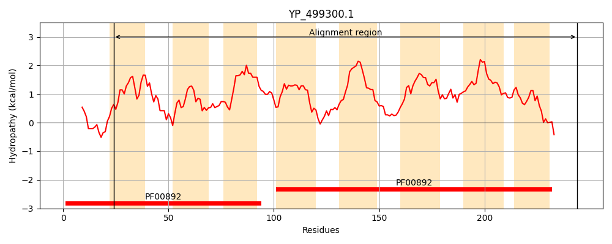
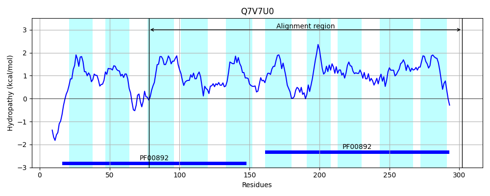
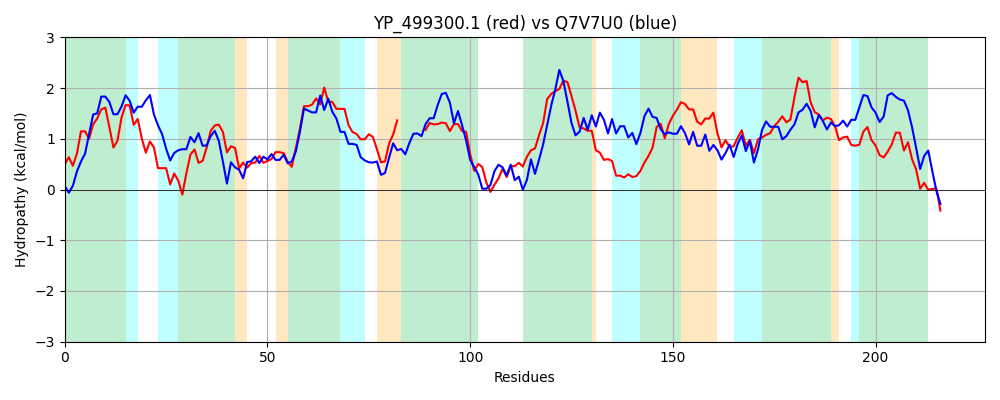

Hit Accession: Q7V7U0
Hit TCID: 2.A.7.28.11
Hit Description: gnl|BL_ORD_ID|15602 gnl|TC-DB|Q7V7U0|2.A.7.28.11 Integral membrane protein, DUF6 OS=Prochlorococcus marinus (strain MIT 9313) GN=PMT_0643 PE=4 SV=1
Mach Len: 227
e:0.000000
Query TMS Count : 8
Hit TMS Count: 10
TMS-Overlap Score: 6.200000
Predicted Substrates:None
BLAST Alignment:
Score: 227 , Bit scores: 92 bits, E-value: 4.2e-22, Alignment length: 227, Percentage identity: 28
Query: 24 LLITRSTLGLIGVLLNIYAIDHMVLSDADSLMKLNPFWTILLSIVFLHEKVRKYQITAMIIAILGMLLIVKPEFSSSMIPSLA------GLFSGIFAASAYTCVRALSTREAPYTIVFYFSLFSVIVLIPFTAYTYEPMSQMQILYLLGAGLAAAVGQIGVTLAYSFAAAKDISIFTYASIIFTAILGFILFGESPDFYATLGYVVIIGASYYMFEKARRDAKIIKK 244
LL+ R LG + A+ + L+ A L P + L + +FL E++ A+ + LG+ L++KP + + + L +F A AY CVR LS +E IVFYF L SV + + F + L++LG GL +GQI +T + A Y ++F + G +LF E D + +G ++++GA+ F R I+K+
Sbjct: 78 LLLLRGLLGTAALFCVFDALASLPLATATVLQYTYPTFVALAAWMFLRERIHPRIGIAVFLGWLGITLVLKPAWLGTSFTGYSPLSVSIALSGALFTALAYVCVRELSKQEHQLVIVFYFPLTSVPIALLFLGNQGVLPLGIDWLWILGIGLFTQLGQIWITEGLTLLPAATAGSIGYFQVLFATLWGVLLFAEPVDGWFVIGALLVLGATLISFRS--RQENILKQ 302 | Protein Hydropathy Plots: |
|---|
|  |  |
Pairwise Alignment-Hydropathy Plot:
|
|---|
|  |